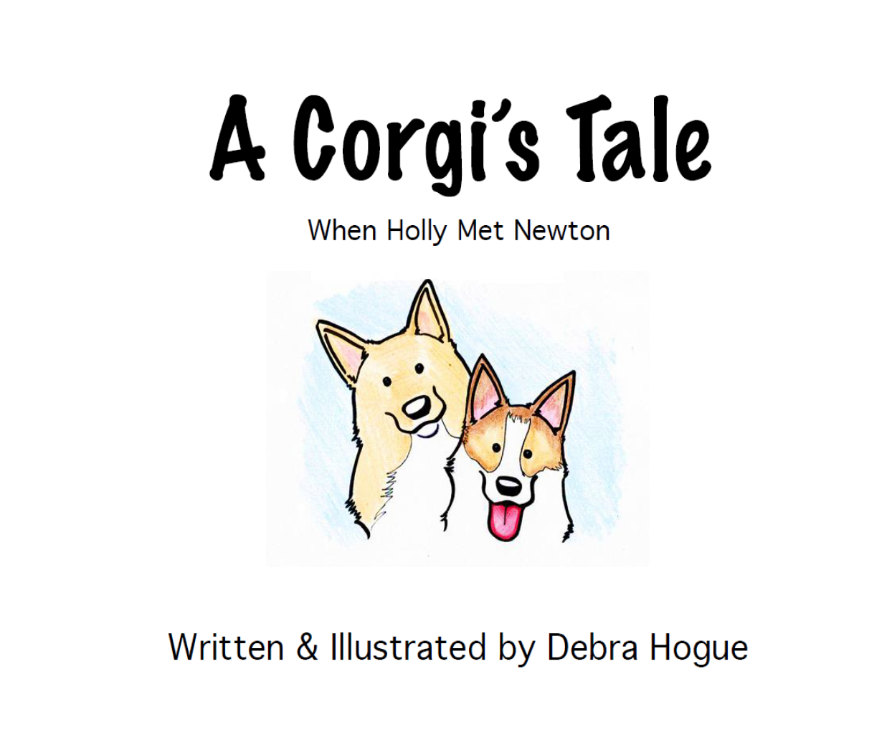
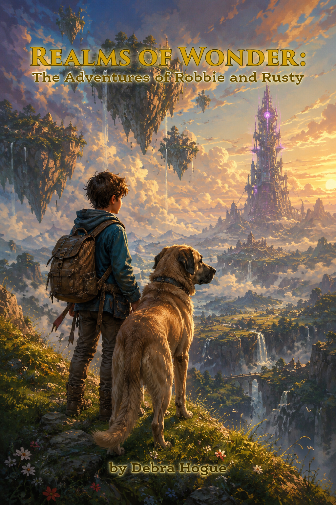

01
Books Written

PublishedA Corgi's Tale
When Holly Met Newton
Written & Illustrated · 2017
The real-life story of Holly, a rescue dog, meeting her new brother Newton — also a rescue dog. Written and hand-illustrated to help children understand and embrace the adoption of a rescue dog. Dedicated to my son, Robbie.

In ProgressRealms of Wonder
The Adventures of Robbie and Rusty
Written by Debra Hogue · Illustrated with AI (Gemini)
A fantasy adventure following a boy and his dog through magical realms. Inspired by my son Robbie and his dog Rusty. A personal exploration of storytelling at the intersection of human imagination and AI-assisted illustration — a living example of human intent driving creative tools.
 In Progress
In Progress
The Upward Spiral
Rising Through Adversity
Written by Debra Hogue and Yolanda Faye Perry · Foreword written by Aquilah Ahmad
A Christian nonfiction book for professional women drawing on our shared experiences navigating toxic work environments and the faith that carried us through. Think Chicken Soup for the Soul meets workplace survival guide with a strong faith foundation.
02
Books Illustrated
 Published
Published
Crossing the Rainbow Bridge
Illustrator · Author: J. Michael Robertson
A spiritual children's story in which young siblings Stephen and Holly journey to a place just this side of heaven, where animals are healthy and vigorous as they wait for their human companions. Illustrated in full color across 46 pages for this sequel to Robertson's Are There Giraffes in Heaven?
Purchase at Oklahoma Books Online ↗03
Writing in Progress
Co-Author
The Upward Spiral
Rising Through Adversity
A book for professional women navigating workplace adversity — the kind that doesn't show up in job descriptions but shapes careers and lives. Drawing on real experiences from the authors, this book offers honest reflection, hard-won wisdom, and a path forward for women facing systemic challenges in professional settings. Foreword by Aquilah Ahmad.
Curriculum Contributor
Mission u 2029 Children's Curriculum
United Women in Faith
Contributing to the development of the 2029 Mission u Children's Curriculum for United Women in Faith — a Biblically-centered, anti-oppression educational program designed for use in local church and ecumenical settings. The curriculum is structured for 8 hour-long sessions and designed to deepen Biblical literacy, spirituality, and action at the local level.
04
Community Service
PALS Association · Moore, Oklahoma
St. John's Lutheran School — PALS Association President
As President of the PALS Association at St. John's Lutheran School in Moore, Oklahoma — where my son Robbie attends — I lead the parent-teacher organization in coordinating fundraising, community events, school enrichment programs, and family engagement initiatives. PALS is at the heart of what makes SJLS a community, and I am deeply invested in its mission and its students.
My work with PALS has included securing Oklahoma City Community Foundation grants for campus improvements — including the Garden of Wonder outdoor classroom, landscaping, and drainage infrastructure — coordinating Scholastic Book Fairs, school auctions, and community outreach, building a school clothing closet, and developing direct outreach campaigns for enrollment growth.
Visit PALS at SJLS ↗American Cancer Society · March 2026
31-Mile Charity Walk
Completed a 31-mile American Cancer Society charity walk with my service dog, Marley — meeting my fundraising goal. Cancer has touched my family personally, and this walk was a meaningful way to turn that into action.
Faith Community
United Methodist Curriculum Writing Team
Serving as a contributor on the writing team for the United Women in Faith Mission u 2029 curriculum — developing Biblically-centered, anti-oppression educational content for use in church communities across the country. The curriculum is designed to build Biblical literacy, deepen spirituality, and inspire action at the local level, with release planned for September 2028.